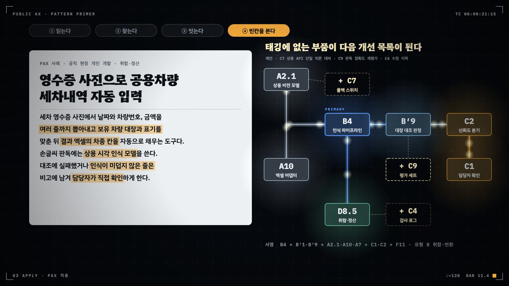

조립: 적용 절차와 서비스 유형별 템플릿
부품 목록을 외워도 서비스는 만들어지지 않는다. 무엇부터 정하고 무엇을 함께 끼우며 실패가 나면 어디에 무엇을 더할지를 적용 절차, 진행 경로, 유형별 조립 템플릿, 위협 모델, 실패 대응표가 정한다.
- 적용 절차 여섯 단계를 순서대로 밟아 조립도를 만든다
- 진행 경로 열한 단계에서 지금 위치와 다음 부품을 고른다
- 서비스 유형별 조립 템플릿을 읽고 흔히 빠지는 필수 부품을 짚는다
- 신뢰 불가 입력의 출처에서 필수 보안 부품을 고른다
- 운영 중 관측된 실패 양상에서 끼울 부품과 확인 질문을 찾는다
민원 상담 챗봇을 만들겠다는 기안이 정보화 부서에 올라오면, 담당자가 붙잡는 질문은 대개 같다. 무엇부터 정하고 어떤 부품을 함께 끼워야 하는가, 그리고 무엇이 빠지면 심사에서 걸리는가. 4장의 패턴 서명은 이미 만든 과제를 읽는 데 썼다. 같은 서명을 빈칸부터 채워 나가면 조립도가 된다. 카탈로그 §7은 그 순서를 적용 절차 여섯 단계와 진행 경로로, 기본 조합을 서비스 유형별 조립 템플릿으로 정해 두었다. 이 장은 여기에 유형별 위협 모델과, 실패 양상에서 부품을 고르는 표를 덧붙였다.
12.3절의 조립도는 모두 같은 문법의 가로 배선도다. 왼쪽에서 입력이 들어와 주 부품 B를 지나고, 이용자 면 F를 거쳐 접점 D에 닿는다. 위 띠에는 흐름 전체에 거는 통제 C와 보안 S가, 아래 띠에는 주 부품이 기대는 기반 A가 놓인다. 점선 상자는 그 유형의 필수 부품 가운데 PAX 557건 태깅에서 자주 빠진 것이다. 템플릿을 가져다 쓰는 사람은 점선 상자부터 확인한다.
12.1 적용 절차 여섯 단계
새 과제를 기획할 때도, 이미 만든 과제를 심사할 때도 같은 여섯 단계를 밟는다(그림 12.1). 순서에는 이유가 있다. 앞 단계의 결정이 뒤 단계의 필수 부품을 정한다.
1단계 · 접점과 환경 조건을 먼저 못 박는다 (D, E)
어떤 서비스 블록인지, 배포망·모델 의존·실행 형태·권한 범위·데이터 등급이 무엇인지부터 적는다. 다섯 축 중 E4 권한과 E5 등급이 이후 모든 필수 부품을 결정한다(표 4.2). 이 단계를 건너뛴 과제는 실데이터 없이 시연 화면만 남는 X6데모웨어가 된다. 시연 환경과 운영 환경의 망·등급이 다르면 시연에서 쓴 부품 대부분을 운영에서 쓸 수 없기 때문이다.
2단계 · 기반 부품을 확보하거나 Provider에서 가져온다 (A)
데이터 자산·모델 서빙 계층·문서 어댑터는 새로 만들기 전에 범정부 AI 공통기반, 공공 깃랩, 공공데이터 MCP에서 먼저 찾는다. 없을 때만 만들고, 만들면 레지스트리에 올린다. 근거는 A 계층의 정의에 있다. A 계층은 Provider 방식으로 상위에 한 번 두고 여러 과제가 나눠 쓰는 부품이다.
3단계 · 업무 컴포넌트 하나와 제어 흐름 원형을 고른다 (B, B′)
사람과 AI가 일을 나누는 모양을 정한다. 단일 에이전트와 순차 배선에서 시작하고, 분리 가능한 하위 작업이 확인될 때만 계층·병렬로 승급한다. 이 단계의 산출물이 조립도의 중심선이다. 주 부품은 4장의 가치 흐름 규칙(R1)대로 사람이 받는 산출물에서 거꾸로 고른다.
4단계 · 평가 세트를 먼저 만든다 (C9)
RAG를 붙이기 전, 모델을 고르기 전에 업무 질문·정답·채점 기준 세트(C9평가 세트·회귀시험)를 만든다. 이후 모든 변경은 이 세트로 잰다. PAX 557건 가운데 이 세트를 갖춘 사례는 15건뿐이다. 세트가 없으면 다음 해에 모델을 바꿀 때 무엇이 나빠졌는지 알 수 없다.
5단계 · 권한 범위에 맞춰 통제 부품을 장착한다 (C1~C8)
P0~P1이면 C1검토 큐와 C5가드레일 필터로 충분하다. P2 이상이면 C2위험도 라우터·C3상태 머신·롤백·C4감사 로그·지표·C8권한 경계·킬스위치가 필수다. 상시 서비스이거나 상용 API에 의존하면 C7폴백 스위치도 필수다. 되돌리는 데 사람 시간이 많이 드는 조치에는 반드시 체크포인트를 둔다.
6단계 · 이용자 면을 붙이고 환류를 닫는다 (F, C6)
출처 표시·편집 가능 출력·한계 안내로 통제를 이용자에게 보이게 한다. 그리고 수정·이의·오탐 기록이 정해진 주기로 재학습과 기준 개정에 돌아오게 한다(C6환류 파이프라인). 여기까지 운영 증거가 쌓이면 AI-Native 후보다.
12.2 진행 경로: 부품을 늘리는 순서
여섯 단계가 한 과제의 설계 순서라면, 진행 경로는 한 서비스가 해를 넘기며 부품을 늘려 가는 순서다. 카탈로그는 Fowler·Subramaniam의 GenAI 진행 경로(직접 프롬프트 → 평가 → RAG → 검색 품질 → 가드레일 → 튜닝)와 "단일 에이전트에서 시작해 승급한다"는 원칙을 공공 서비스 부품으로 옮겨 열한 단계로 정리했다(그림 12.2).
순서를 건너뛰는 것이 가장 흔한 실패다. 평가 없이 RAG를 붙이거나 RAG 없이 튜닝하면 X10평가 없는 RAG, RAG 없는 튜닝에 빠진다. 단일 에이전트도 갖추기 전에 여러 에이전트를 엮으면 X11처음부터 멀티에이전트가 된다. 각 단계는 다음 단계를 잴 기준을 깔아 둔다. 한 단계를 건너뛰면 나중에 무엇이 좋아졌는지 말할 길이 없다.
진행 경로는 보안 부품이 들어갈 자리도 정한다. 6단계에서 가드레일을 붙일 때 S8독립 검증기·이중 심판과 S3컨텍스트 방화벽을 함께 붙인다. 8단계에서 시스템 쓰기 권한을 열 때는 S4행동 선택기·S5계획 후 실행·S6격리 LLM 중 하나와 S1AI 게이트웨이·S10결정적 재생을 붙인다. 7단계에서 도구 호출이 생기기 전까지는 공격자가 끌어낼 행동이 없으므로, 권한을 P0~P1로 묶어 두는 것이 가장 싼 보안이다.
12.3 서비스 유형별 조립 템플릿
카탈로그 §7.3은 서비스 유형마다 기본 조립을 정해 두었다(표 12.1). 각 행의 필수 부품은 그 유형의 권한 범위와 접점에 비추어, 빠지면 AI-Enabled 이상으로 인정하지 않는 부품이다. 참조 구현은 PAX 사례 가운데 그 유형의 조립을 잘 보여 주는 것을 골랐다. 유형 2·3·10·11은 PAX 557건 안에 사례가 1~3건뿐이다. 사례로 확인할 조립이 거의 없으므로 이 네 유형의 템플릿은 카탈로그 규칙으로 읽는다.
| 유형 | 접점·권한 | 업무 컴포넌트 + 원형 | 필수 기반(A) | 필수 통제(C) | 필수 상호작용(F) | 참조 구현(PAX) |
|---|---|---|---|---|---|---|
| 1 대민 상담·안내 | D1·D7 · P0~P1 | B3 (B′7 + B′2 예외 이관) | A2, A1, A6(선택) | C5, C9, C7(상시) | F1, F7, F4 | 세상에 그런법이 어딨어요?(경기도의회), 소방기술민원 답변생성기 |
| 2 접수·심사 자동화 | D2·D3 · P1~P2 | B4 (B′1 + B′5) | A10, A2(OCR·STT), A1 | C1, C2, C3, C4, C8(P2) | F2, F6, F8 | 온나라 AI 문서 분배기 |
| 3 현장 감시·경보 | D6·D5 · P1~P2a | B5 (B′1 → B′9 → 경보) | A5 또는 A2.2·A2.5, A11, A1 | C1, C7, C4, C2, C6 | F9, F7 | 레스큐79(CCTV 팔 동작 구조요청 감지) |
| 4 내부 문서·기안 | D8.3·D8.2 · P1 | B1 (B′5) | A9, A10, A2(행정망이면 A2.4) | C1, C5, C9 | F2, F5, F3 | gov-report-skill |
| 5a 분석 대시보드 | D8.1 · P0~P1 | B2 또는 B0 + B1 서술 | A1, A2.5, A3·A4 | C9, C6, C5 | F9, F7 | 안심학교 MAP |
| 5b 데이터 에이전트 | D8.1 · P0 | B6 로컬 호스트 (B′7 + B′3) | A8, A2 로컬 모델 | C8, C4, C5 | F1, F6 | 망분리 환경용 로컬 AI 에이전트, Korean Stats MCP |
| 6 정책·홍보 콘텐츠 | D8.10 · P1 | B7 (B′8 + B′6) | A9, A10, A2 | C5, C1 | F3, F2 | 릴리즈픽(ReleasePick), Public Cardnews |
| 7 대조·점검 도우미 | D8.4 · P0~P1 | B0 또는 B3 (B′5) | A3, A10 | C1, C5, C9 | F7, F1 | paper-verify, Attendance Checker, Legal Reviewer |
| 8 취합·변환 자동화 | D8.5·D8.9 · P1 | B0 (B′1) | A10, A7 | C4(전이 시), C3 | F8 | GatherFlow, Kordoc, 출장 여비 서류 자동화 |
| 9 인수인계·지식 보존 | D8.7 · P0 | B0 → B3 승급 | A1, A6(승급 시) | C5, C8 | F8, F1 | 내편이음, 눈치코치 |
| 10 위험 예측·표적 선별 | D6·D3·D8.4 · P1~P3 | B2 (B′9) | A1, A2.5, A4 | C1, C2, C6, C9, C4 | F9, F7 | 아산 하천 수위 예측 모니터링(PAX 유일 사례, 필수 부품 6개 결손. 참조 구현이 아니라 출발점) |
| 11 추천·매칭 | D7·D4 · P1 | B2 또는 B0 + B1 서술 | A1, A4 | C1, C5, C6 | F9, F3 | 인사·노무 뉴스 추천 자동발송 프로그램 |
| 12 개발 코파일럿 | D8.3 · P1 | B1 스킬 코파일럿 (B′5) | A9, A2.2(또는 A2.1) | C1, C9, S9 | F2 | 바이브코드 하네스, CODERX |
아래 조립도는 표의 각 행을 배선도로 옮기고, 12.4절의 필수 보안 부품을 위 띠에 함께 얹었다. 점선 상자는 PAX 557건 태깅에서 그 유형 사례의 30% 이상에 missing_required로 오른 필수 부품이다. 사례가 5건 미만인 유형에는 점선을 긋지 않았다. 서비스를 설계하는 쪽은 점선 상자부터 확보하고, 심사하는 쪽은 점선 상자부터 묻는다.
유형 1 · 대민 상담·안내
민원인의 질문에 기관 문서로 접지한 답을 준다. 주 부품은 B3지식 접지 상담이고, 답할 수 없는 질문을 담당 부서로 넘기는 B′2라우터·디스패처가 예외 경로다(그림 12.3). PAX에서 유형 1로 태깅된 32건은 필수 부품 여섯 개가 모두 자주 빠졌다. 31건에 C9가, 30건에 C5가, 27건에 A2가, 21건에 F1이, 14건에 C7이, 11건에 F7이 없었다. 평가 세트와 가드레일은 거의 모든 사례에 없고, 폴백은 절반 가까이 빠졌다. 대민 서비스는 상시 운영이므로 상용 모델이 멈추는 날을 설계에 넣어야 한다. 다만 32건 중 20건은 주 부품이 B0인 비LLM 안내 도구다. 비LLM 도구는 C7·F7이 면제되고 A2 대신 A1이 인정되므로(R7·R21), A2·C7·F7 결손의 일부는 v0.7 규칙으로 걸러진다.
유형 2 · 접수·심사 자동화
제출 서류를 인식해 구조화하고, 심사 판단의 재료를 만든다. 주 부품은 B4인식 파이프라인이다(그림 12.4). 판정 목적(승인·반려)이 있으면 유형 2이고, 형식과 경로만 바꿔 전달하면 유형 8이다(R23). 업무 시스템에 쓰는 순간 P2이므로 라우터·롤백·로그·권한 경계가 한꺼번에 필수가 된다. PAX 557건에서 이 유형은 온나라 AI 문서 분배기를 포함해 3건뿐이고, 3건 모두에 C2·C3·C4·F2가 없었다. 위험도에 따라 자동 처리와 검토를 가르는 분기와 잘못 처리된 건을 되돌리는 경로는 개인이 만든 도구에 좀처럼 붙지 않는다. 사례가 적어 그림 12.4에는 점선을 긋지 않았다. 시민이 제출 전에 서류를 스스로 정리하는 도구는 2b로 따로 다룬다(R20).
유형 3 · 현장 감시·경보
센서·영상 스트림을 상시 또는 주기로 관측해 이상을 찾고 경보를 낸다. 주 부품은 B5현장 감지·경보이고, 탐지 결과를 규칙으로 판정하는 B′9결정론 판정 게이트를 거쳐 경보로 나간다(그림 12.5). 경보가 스피커·경광등·전광판 같은 물리 설비를 움직이면 A11액추에이션·현장 통지 어댑터가 필수이고 권한은 P2a다. 모델이 멈추면 감시도 함께 멈추므로, 이 유형에서 가장 먼저 갖출 통제는 Fail-safe 경로다. PAX 557건에서 이 유형은 레스큐79(CCTV 팔 동작 구조요청 감지) 1건뿐이고, 그 사례에는 C7·C2·C4와 A11이 없었다. A11은 물리 설비를 움직일 때만 필수다(R10). 사례 하나로는 결손 경향을 말할 수 없으므로 그림 12.5에는 점선을 긋지 않고 카탈로그의 조립 템플릿만 옮겼다.
유형 4 · 내부 문서·기안 코파일럿
담당자의 보고서·기안 작성 옆에 초안을 놓고 사람이 확정한다. 주 부품은 B1코파일럿이고, 초안과 검토를 분리하는 B′5생성자-비평가가 기본 배선이다(그림 12.6). 이 유형은 PAX에서 60건으로, 기타를 빼면 네 번째로 많다. 필수 부품 다섯 개가 모두 자주 빠진다. 50건에 C5가, 44건에 C1이, 42건에 F2가, 36건에 A9가, 35건에 A10이 없었다. 개인이 만든 초안 도구는 한글 서식으로 출력하지 못하고 사람이 고치는 절차도 없이 PDF나 텍스트만 내놓는 일이 많다. 행정망에서 쓰면 상용 모델은 A2.4내부망 프록시를 거친다.
유형 5a · 분석 대시보드·브리핑
공공데이터와 업무 통계를 집계·예측해 판단 자료를 보여 준다. 에이전트는 없다. 주 부품은 학습 모델이면 B2예측·추천기, 규칙 집계면 B0이고, LLM이 서술을 덧붙이면 B1이 secondary다(그림 12.7). PAX에서 이 유형으로 태깅된 62건은 모두 필수 부품이 하나 이상 빠졌다. 62건 전부에 C6이, 60건에 A2.5가, 58건에 C9가, 57건에 F9가, 44건에 F7이, 32건에 A1이 없었다. 그런데 이 숫자의 상당 부분은 규칙이 현실과 맞지 않아 생겼다. PAX의 대시보드 62건 가운데 59건은 주 부품이 B0이다. 학습 모델 없이 새로고침만 하는 현황판에 학습 모델을 전제한 필수 목록을 대니, 맞지 않는 경고가 늘 나왔다. v0.7.1의 R19가 5a-brief(LLM 브리핑형)와 5a-agg(비LLM 집계형)를 가른 이유다. 집계형의 필수 부품은 A1, F2, C4다.
유형 5b · 데이터 에이전트
담당자의 자연어 질의를 받아 에이전트가 공공데이터 MCP 같은 도구를 불러 답을 조합한다. 주 부품은 로컬 호스트 변형의 B6에이전트 오케스트레이터이고, B′7ReAct 도구 루프와 B′3병렬 팬아웃·수집이 배선이다(그림 12.8). 도구 출력은 신뢰 불가 입력이므로 S5계획 후 실행이나 격리 LLM이 필수다. PAX에서 이 유형 77건 중 76건에 S5·S6이, 73건에 C4가, 69건에 C8이, 62건에 F1이 없었다. 이 결손도 일부는 관점의 문제다. 서버를 만든 사람과 호스트를 만든 사람이 다르므로, v0.7.1은 5b-server(A8, S11, 문서화된 스키마)와 5b-host(C4, F1, S5 또는 S6)를 나눴다(R18). 이 분리로 서버 저장소에 호스트 쪽 통제를 요구하던 경고가 걸러진다.
유형 6 · 정책·홍보 콘텐츠 제작
보도자료와 참고 자료를 받아 카드뉴스·인포그래픽·영상 같은 콘텐츠를 만든다. 주 부품은 B7콘텐츠 생성기이고, 구성 계획을 먼저 세우는 B′8계획-실행과 B′6반복 개선이 배선이다(그림 12.9). PAX 14건 중 12건에 C1 검수가, 12건에 F3 대안·부분 재생성이, 11건에 C5 사실 검증이, 5건에 A9 스타일 스킬이 없었다. 공공 홍보물은 한 번 나가면 회수하기 어렵다. 발간 전 사람 검수와, 마음에 들지 않는 부분만 다시 만드는 면이 이 유형의 최소 통제다.
유형 7 · 대조·점검 도우미
점검 대상 문서·코드·기록을 기준과 대조해 확인할 지점을 짚는다. 주 부품은 규칙으로 점검하면 B0결정적 도구, 법령에 접지해 해석하면 B3이다(그림 12.10). 기준의 출처인 A3공공 API 제공자가 자주 빠졌다(PAX 53건 중 38건). 기준을 손으로 옮겨 담으면 법령이 개정될 때 점검기가 낡는다. 같은 53건 중 46건에 C5 출처 검증이, 41건에 C1 "최종 판단은 사람"이 없었다. 점검 대상이 점검기를 속이려 드는 일도 이 유형에서 생긴다. 대상별 격리(S6)나 고정 규칙 실행(S4)으로 막는다.
유형 8 · 취합·변환 자동화
부서별 제출 파일을 모으고 서식을 바꾸는 사무 자동화다. PAX 557건에서 가장 큰 유형(109건)이다. 주 부품은 대개 B0결정적 도구이고 런타임에 AI를 부르지 않는다(그림 12.11). 필수 부품은 A10문서 형식 어댑터와 A7자체 제작 환경 둘뿐이지만, 109건 중 34건에 A10이, 16건에 A7이 없었다. 둘 다 갖춘 사례는 64건이다. 한글 문서와 엑셀을 제대로 읽고 쓰지 못하면 취합 도구는 결국 사람이 다시 옮겨 적게 만든다. 처리 로그(C4)는 개인 도구일 때는 없어도 되지만 기관 공식 도구로 전이하는 순간 붙여야 한다. 부서에서 올라온 파일에 매크로나 숨은 지시가 들어 있을 수 있으므로 파일 검사(S11)와 샌드박스(S9)가 위 띠에 놓인다.
유형 9 · 인수인계·지식 보존
전임자의 파일 더미에서 업무·일정·전례를 찾아 후임자에게 넘긴다. 문서를 정리하는 결정적 도구(B0)에서 시작해 지식 접지 상담(B3)으로 승급하는 경로가 기본이다(그림 12.12). PAX 38건 중 37건에 C5 비식별과 C8 접근 범위가, 25건에 A1 문서 자산화가 없었다. 인수인계 자료에는 개인정보와 등급 문서가 섞여 있다. 비식별 없이 코퍼스로 만들면 다음 담당자뿐 아니라 검색 권한을 가진 모든 사람에게 그 문서가 열린다. S2권한 인식 검색이 이 유형의 필수 보안 부품인 이유다.
유형 10 · 위험 예측·표적 선별
행정 데이터와 연계 데이터로 위험 점수나 등급을 매겨 점검·지원 대상을 고른다. 주 부품은 B2예측·추천기이고, 점수를 규칙으로 등급화하는 B′9결정론 판정 게이트가 배선이다(그림 12.13). 처분에 가까운 판단을 보조하므로 권한이 P3까지 올라간다. PAX 557건에서 이 유형은 아산 하천 수위 예측 모니터링 1건뿐이고, 그 사례에는 C1·C2·C6·C9·F9·F7이 모두 없었다. 사례 하나로는 결손 경향을 말할 수 없으므로 그림 12.13에는 점선을 긋지 않았다. 등급을 자동으로 매기는데 그 등급에 따라 검토 강도를 다르게 하지 않으면 높은 점수가 곧 처분 대상 명단이 된다. 연속값 예측이나 참고용 순위만 내는 경우에는 C2가 면제된다(R10). 판정 근거(F9)는 담당자에게는 필요하지만, 위조 탐지처럼 상대가 기준을 역이용할 수 있는 접점에서 대상자에게까지 보여 주면 X16기준을 노출하는 위조 탐지에 빠진다.
유형 11·12 · 추천·매칭과 개발 코파일럿
유형 11 추천·매칭은 유형 10과 같은 B2 계열 조립에 추천 사유(F9)와 대안 제시(F3)를 붙인다. PAX 557건에서 이 유형은 3건뿐이어서 템플릿은 표 12.1로 갈음한다. 3건 모두에 C1·C5·C6·F3이 없었다. 추천이 하나만 나오면 이용자는 그것을 정답으로 읽는다.
유형 12 개발 코파일럿은 공직자 개인 개발의 저변을 반영한 유형이다. 주 부품은 스킬 형태의 B1이고 생성 코드를 격리 실행하는 S9임시 샌드박스가 필수다. 원래 필수 모델 서빙은 A2.2 주권형 온프레미스였지만, 바이브 코딩 도구 대부분이 상용 API나 BYO 구독을 쓴다는 피드백에 따라 R22가 A2.1 또는 A2.2로 완화했다. PAX 10건 모두에 C9와 S9가 없었다. 개발 도구는 다른 도구를 만드는 도구이므로, 여기서 빠진 평가와 격리는 그 도구로 만든 모든 산출물로 번진다.
12.4 유형별 위협 모델과 필수 보안 부품
조립 템플릿에 적대자의 관점을 덧씌우면 위협 모델이 된다. 첫 질문은 신뢰 불가 입력이 어디서 들어오느냐이고, 그 답이 S4행동 선택기·S5계획 후 실행·S6격리 LLM·맵리듀스 가운데 무엇을 고를지를 정한다(그림 12.14). 카탈로그는 Beurer-Kellner 외의 프롬프트 인젝션 방어 연구에 실린 사례 연구 10건 가운데 공공 서비스와 구조가 같은 것을 유형마다 붙였다. 고객 상담 챗봇의 할인 조작 시도는 대민 상담의 감면·자격 조작 시도와 같고, 이력서 심사 보조는 자격 심사와 같다.
민원인이 쓰는 입력은 모델에게 직접 말을 거는 통로다. 그래서 모델이 미리 정한 행동 가운데 고르기만 하게 하고(S4), 행동이 정해진 뒤에는 그 입력을 컨텍스트에서 지운다(S7컨텍스트 최소화). 제출 서류는 서류마다 숨은 지시가 있을 수 있으므로 문서별로 격리한 LLM이 읽고 규칙이 집계한다(S6). 에이전트가 도구를 부를 때는 외부 데이터를 읽기 전에 호출 계획부터 고정한다(S5). 도구 응답이 다음 행동을 바꾸지 못하게 하려는 것이다. 센서 스트림처럼 LLM이 없는 위협 모델에서는 경보 발송에 상한을 두고(S1) 판정 과정을 나중에 그대로 재생하도록 기록한다(S10).
12.5 실패 양상에서 부품으로
설계가 끝나도 운영 중에 실패는 난다. 카탈로그는 Towards AI가 패턴마다 "막는 실패 양상"을 짝지은 방식을 공공 서비스 부품으로 옮겨, 증상에서 출발해 끼울 부품을 고르는 표를 만들었다(표 12.2). 셋째 열의 확인 질문은 심사 질문으로도 쓴다. 질문에 즉시 답할 수 없다면 그 칸의 부품이 없는 것이다.

| 관측되는 실패 | 끼울 부품 | 확인 질문 |
|---|---|---|
| 출력 품질이 들쭉날쭉 | B′5생성자-비평가 C9평가 세트 A9규범 스킬 | 같은 질문 10개를 다시 넣으면 점수가 얼마나 흔들리는가 |
| 왜 그렇게 답했는지 모름 | B′7ReAct 추론 흔적 C4추적 F1출처 표시 | 이 답의 근거 문서와 도구 호출 순서를 지금 볼 수 있는가 |
| 단계가 빠지거나 순서가 꼬임 | B′8계획-실행 C3상태 머신 | 이 건이 어느 단계에서 멈췄는지 시스템이 아는가 |
| 비용·지연 폭주 | A2모델 라우팅·캐싱 B′+기억 관리 B′5반복 상한 | 지난달 호출당 비용과 P95 지연은 얼마인가 |
| 에이전트끼리 충돌·중복 | B′4감독자 계층 B′2라우터, 단일 에이전트로 후퇴 | 하위 작업이 정말로 분리되는가, 하나로 합쳐도 되는가 |
| 되돌릴 수 없는 조치가 나감 | C8권한 경계·킬스위치 C1체크포인트 F6행동 확인 C3롤백 | 사람이 고치는 데 오래 걸리는 조치 목록이 문서에 있는가 |
| 모델 업데이트 후 갑자기 나빠짐 | C9회귀시험 A2버전 고정 C7Blue-Green 교체 | 모델·프롬프트·설정 조합이 릴리스처럼 버전 관리되는가 |
| 민감정보가 외부로 나감 | C5비식별 전처리기 A2.4내부망 프록시, E5 등급 기록 | 프롬프트가 기관 밖으로 나가기 전 무엇이 걸러지는가 |
| 이용자가 답을 못 믿음 | F1출처 F7한계 안내 F2편집 가능 C5출처 검증 | 이용자가 "공식 판단이 아님"을 어디서 읽는가 |
| 문서 속 지시대로 에이전트가 움직임 | S6격리 LLM S5계획 고정 S3방화벽 | 이 에이전트가 읽는 텍스트 중 기관 밖에서 쓴 것은 무엇이고, 그것이 어떤 도구를 부를 수 있는가 |
| 민원인이 챗봇을 설득해 규정 밖 답을 받음 | S4행동 선택기 S7컨텍스트 최소화 F7한계 안내 | 답이 데이터에서 나오는가, 모델의 판단에서 나오는가 |
| 배포 후 개선이 멈춤 | C4지표 C6환류 C9재검증 | 지난 분기 지표 때문에 바뀐 규칙이 하나라도 있는가 (AIM06) |
한 증상에 부품이 여럿 적혀 있으면, 증상이 어느 층에서 생겼는지 보고 고른다. 출력 품질이 흔들리는데 평가 세트가 없다면 먼저 C9를 만들어 흔들림을 재고, 그다음에 비평가를 넣을지 규범 스킬을 넣을지를 정한다. 마지막 행의 질문은 AX 성숙도의 설계 원칙 AIM06(결과가 기준을 고치게)에 해당한다. 지표가 쌓이는데 규칙이 하나도 바뀌지 않았다면, 운영은 되고 있어도 학습은 멈춘 것이다.
12.6 한 서비스로 엮기
Gulli는 『Agentic Design Patterns』의 결론에서 계획, 도구 사용, 멀티에이전트, 성찰, 기억 다섯 패턴을 연구 보조 에이전트 하나로 엮어 보인다. 패턴을 하나씩 배운 독자가 마지막에 묻는 것은 그것들이 한 시스템 안에서 어떤 순서로 맞물리느냐이기 때문이다. 가람시 민원여권과 챗봇으로 같은 일을 해 본다. 4장의 첫 서명에서 출발한 챗봇은 여섯 단계를 다시 밟고(12.1절) 진행 경로 6단계까지 올라왔다. 민원인 한 사람의 질문이 이 조립을 지나는 길을 따라가면, 부품마다 맡은 일이 순서대로 드러난다.
일곱 단계 가운데 새로운 기술은 하나도 없다. 상용 LLM, 문서 검색, 개인정보 필터, 로그는 첫 서명 때도 가람시가 가진 것이거나 쉽게 구하는 것이었다. 그사이 달라진 것은 부품의 순서와 연결이다. 필터가 프록시 앞에 서고, 라우터가 모델의 선택지를 셋으로 묶고, 로그가 평가 세트와 편람 회의로 이어졌다. Gulli의 결론도 같다. 패턴 하나는 문제 하나를 막고, 조합의 품질은 배선에서 갈린다.
핵심 정리
- 적용 절차는 접점·환경 조건 → 기반 → 업무 컴포넌트·제어 흐름 → 평가 세트 → 통제 → 이용자 면·환류의 여섯 단계다. E4 권한과 E5 등급이 통제 부품을 미리 정한다.
- 진행 경로는 직접 프롬프트 코파일럿에서 튜닝형 모델까지 열한 단계다. 평가 없는 RAG, RAG 없는 튜닝, 처음부터 멀티에이전트가 대표적인 건너뛰기다.
- 보안 부품은 진행 경로 6단계와 8단계에 붙는다. 그 전에는 P0~P1 권한 제한이 곧 보안이다.
- 서비스 유형별 조립 템플릿은 주 부품·원형·필수 A·C·F·S를 정한다. 필수 부품이 빠지면 AI-Enabled 이상으로 인정하지 않는다.
- PAX 557건에서는 가드레일·검토 큐·권한 경계·평가 세트가 가장 자주 빠졌다. 일부 결손은 하위유형 분리(R18·R19)로 보정된다.
- 위협 모델은 신뢰 불가 입력의 출처에서 시작한다. 출처가 같으면 유형이 달라도 같은 보안 부품을 쓴다.
- 실패→부품 표의 확인 질문에 즉시 답할 수 없다면 그 칸의 부품이 없는 것이다. 같은 표를 운영 중 보강에도, 심사에도 쓴다.
- 조립의 품질은 배선에서 갈린다. 가람시 챗봇은 새 기술 없이 부품의 순서와 연결을 바꿔 유형 1의 필수 부품을 채웠다.